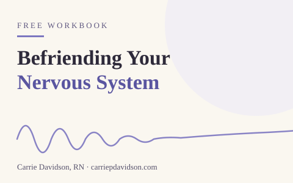
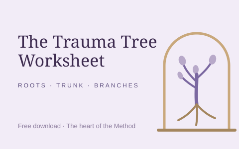
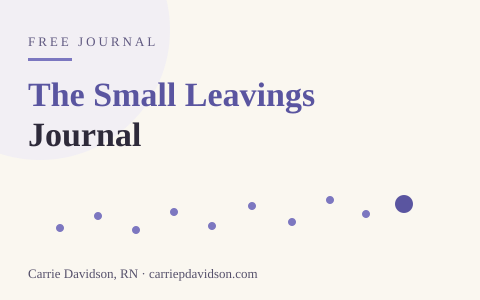
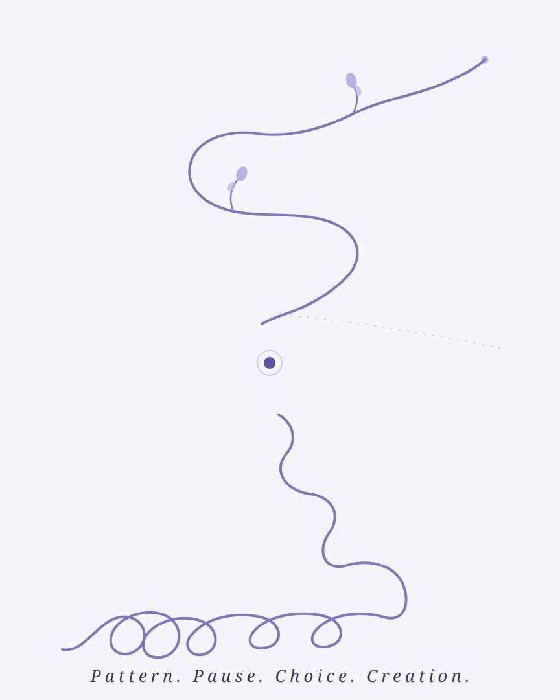
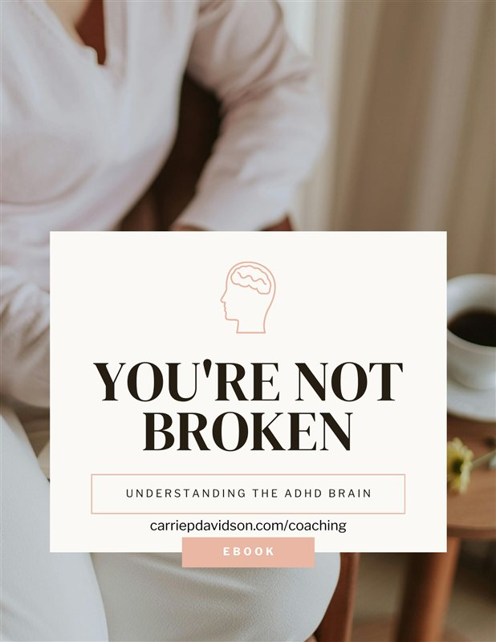
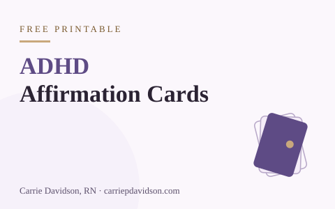
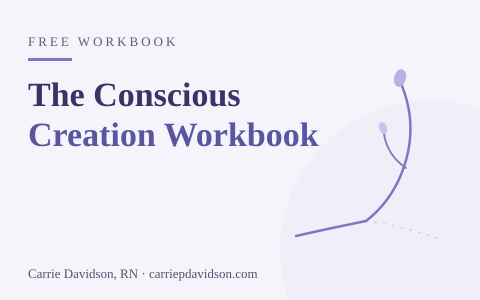

Befriending Your Nervous System
A workbook for making peace with the alarm system that kept you alive: learn to read your own body, then work with it instead of against it.
Free trauma recovery resources
Start where you are.
You don’t have to be ready to hire a coach to begin. You just have to be tired of the loop.
If you’re new, start here
Begin with the quiz, then the workbook, then the weekly letter: each one takes the next small step, in order.
Three minutes to see your pattern’s shape.
The Trauma Tree Workbook, free.
The Sunday Letter, one practice a week.
The free library, then coaching when ready.
The free library
A growing shelf of short, practical guides, grouped by what you need right now. Each title opens a page that explains what it is and who it may help.
For when the alarm will not quiet, and calm itself feels unsafe.

A workbook for making peace with the alarm system that kept you alive: learn to read your own body, then work with it instead of against it.
For seeing the loop as one whole thing, not a hundred separate failures.

The free download at the heart of the Method. Map the roots (what happened), the trunk (the beliefs), and the branches (the patterns) as one system.

Named for the way we lose ourselves: one small leaving at a time. A journal for noticing the exits, and choosing to stay.

The whole method in one unbroken line, for your wall: the loop, the pause, the choice, and the open path. A quiet daily reminder that the pattern is not the ending.
For the brain that works differently, and the days trying harder is not the answer.

A 27-page ebook on why your brain works the way it does: executive function, RSD, and practical tools that work with your wiring instead of against it.

Printable cards with gentle reframes for the ADHD brain: for the days when executive function feels out of reach.
For building the life that comes after regulation, one honest choice at a time.

The workbook at the heart of the Method: prompts for all five steps and for building the intentional life that comes after regulation, one honest choice at a time.
Working through the memoir? The Addicted to Trauma Companion Workbook is free too, and you can read more about it on the memoir page.
The Sunday Letter
Neuroscience precision, a poetic reframe, and one small practice, every Sunday.
{kind=link}